Project 03 · Skeleton Fall Detection · Co-Design
Model-Hardware Co-Design for
Skeleton-based Fall Detection on
Resource-Constrained Edge Platforms
Using a single camera to extract human skeletons, a tiny temporal convolutional network classifies fall vs. normal activity. The same model was deployed on PC, Jetson Nano, and FPGA (PYNQ-Z2) to validate feasibility, real-time performance, and accuracy on edge devices.
- 95.65%固定測試集準確率
- 0.42 ms單次模型推論
- 92.39%FPGA 上板準確率
- ~60 FPSFPGA 推論吞吐
為什麼要做這個題目？
跌倒是高齡者居家意外傷害的主要原因之一……
因此本專題選擇了一條折衷且務實的路線……
相較於直接在原始影像上跑大型 CNN / Transformer，骨架序列把問題降維到「人體關節點的時間軌跡」，不僅降低運算量，也讓模型結構更容易對應到 FPGA 上的定點 MAC 陣列。本專題的目標不是追求單一平台上的最高 FPS，而是在資源受限的邊緣硬體上，驗證一條可重現、可量測、可辯護的協同設計路線。
研究目標與驗證範圍
- 建立從 URFD 影像到骨架序列、再到 1D-CNN 分類的完整軟體管線
- 在固定測試集上量測學術指標（Accuracy / Precision / Recall / F1）與 INT8 量化影響
- 比較 PC、Jetson Nano 2GB、PYNQ-Z2 三平台的延遲、吞吐與部署特性
- 以 Vitis HLS 實作可上板的 1D-CNN 加速器，並驗證 FPGA 準確率與 PC 參考一致率
核心命題
設計一個「硬體友善」的跌倒偵測模型……
整體流程：從影像到警報
整個系統是一條清楚的資料流……
開發與驗證流程
從資料準備到硬體上板，專題依序完成下列階段。每一階段的產出都保留成可重現的檔案（.npy、.onnx、weights.h、實驗 CSV），方便論文引用與後續比對。
- 資料與訓練：URFD 解壓 → MediaPipe 抽骨架 → PyTorch 訓練 1D-CNN → 固定 20% 測試集（seed=42）
- 軟體部署與消融：匯出 ONNX（FP32 / INT8）→ PC / Jetson 推論與效能基準 → 跳幀消融、瓶頸剖析、失效樣本視覺化
- 硬體協同設計：從 deploy ONNX 萃取 INT8 權重 → Vitis HLS 綜合 IP → Vivado 整合 → PYNQ-Z2 上板準確率與延遲量測
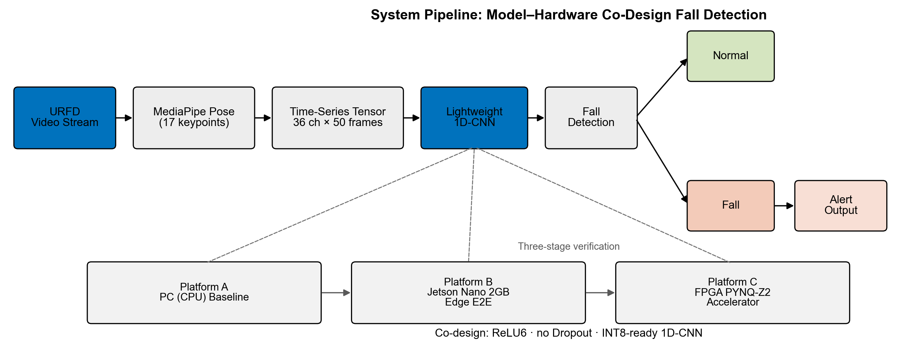
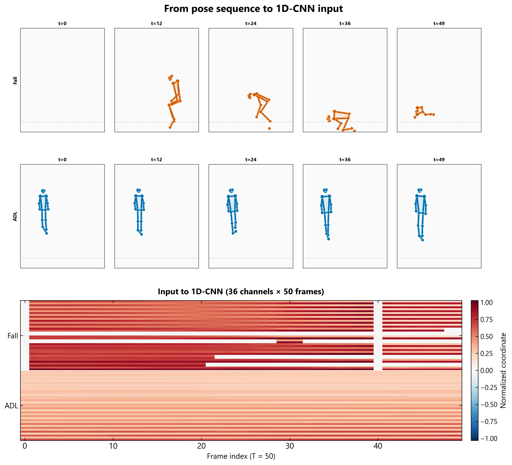
資料與輸入規格
資料來源為 URFD 公開跌倒資料集……
- 36 維：18 個關鍵點的 (x, y) 座標
- 50 幀：以滑動視窗取的時間長度
- 座標已正規化到 0~1，偵測不到的點補 0
- 測試集 92 筆，採 20% 切分、固定 seed=42
- 訓練完成後另備 128 筆校準資料 供 INT8 量化使用
- Fall 為正類；混淆矩陣、FNR 等學術指標皆在固定測試集上計算
三平台各自扮演的角色
PC (CPU)
開發基準：訓練、ONNX 匯出、消融實驗與瓶頸剖析的參考平台，提供最高吞吐的對照組。
Jetson Nano 2GB
邊緣軟體部署：在資源受限的 ARM + GPU 環境驗證 ONNX Runtime 推論，觀察 OS 排程對即時性的影響。
FPGA (PYNQ-Z2)
硬體加速器驗證：以 Zynq-7020 實作訂製 1D-CNN IP，強調確定性延遲、低功耗與可預測的推論行為。
刻意「為硬體著想」的 1D-CNN
模型本身刻意保持簡單……
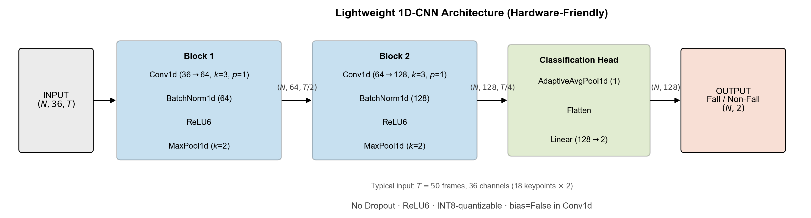
硬體友善的關鍵取捨
- 用 ReLU6 取代 ReLU：輸出有上界……
- 移除 Dropout：推論期無作用……
- Conv 不含 bias：減少參數……
- 固定輸入尺寸：(36, 50)……
為什麼選 1D-CNN？
跌倒的關鍵資訊在於「骨架隨時間的變化」……
訓練與部署管線
模型以 PyTorch 實作，輸入形狀 (N, 36, 50)，輸出二分類 logits。訓練完成後匯出 fall_model_float32.onnx 作為所有平台的統一部署基準；再以 128 筆校準樣本做 INT8 量化，產生 fall_model_int8.onnx 供邊緣推論與 FPGA 權重萃取使用。
- Block 1：Conv1d(36→64, k=3) + BN + ReLU6 + MaxPool → 時間維度減半
- Block 2：Conv1d(64→128, k=3) + BN + ReLU6 + MaxPool → 再減半
- 分類頭：AdaptiveAvgPool1d(1) + Linear(128→2)，輸出 Fall / Non-Fall
最重要的決定：放棄 DPU，改做訂製加速器
專題中段遇到一個關鍵岔路……
原方案：DPU + Vitis AI
- 黑盒式通用加速器
- IP 體積大，Z2 資源不足
- 偏向「使用工具」
採用：訂製 HLS 加速器
- 模型結構為硬體而優化
- 只加速最關鍵的卷積
- AXI-DMA + AXI-Stream
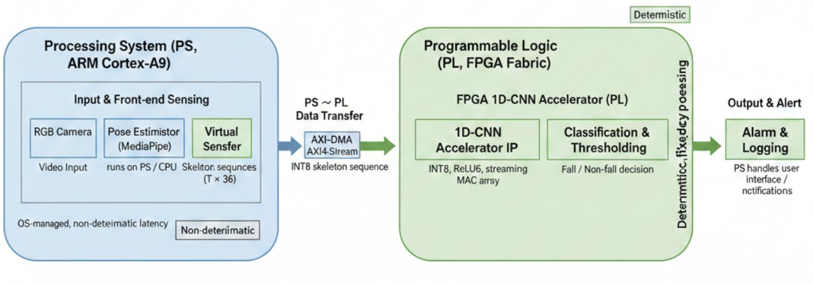
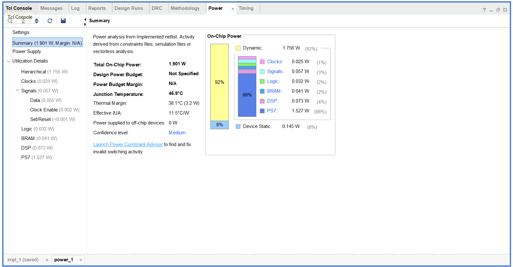
FPGA 上板流程（PYNQ-Z2）
FPGA 端不重新訓練模型，而是沿用 PC 上匯出的 deploy ONNX，確保軟硬體比對有單一真實來源（Single Source of Truth）。完整流程如下：
- 權重萃取：從
fall_model_float32.onnx產生weights.h（INT8 定點權重） - PC 參考：以 ONNX Runtime 對固定測試集推論，輸出
pc_reference.csv作為一致率基準 - 硬體整合：Vitis HLS 綜合 1D-CNN IP → Vivado 建立 Block Design（PS + DMA + Accelerator）→ 產生 bitstream
- 上板驗證：上傳 bit / hwh / 測試資料至 PYNQ，執行準確率腳本，比對 FPGA 預測與 PC 參考
軟體端（PS）負責影像 I/O 與 MediaPipe 骨架擷取，屬於非確定性、OS 排程主導的路徑；硬體端（PL）只負責收到 INT8 骨架序列後的 1D-CNN 推論，提供固定延遲、可重複的計算行為——這正是本專題在邊緣場景想驗證的價值。
實作過程踩過的坑
把一個模型從 PC 一路推到 FPGA……
PYNQ-Z2 跑不動 DPU
板子資源不足以承載完整 DPU IP……
Jetson 裝不了 MediaPipe
Jetson 環境無法安裝 mediapipe……
Bash 腳本的 CRLF 問題
Windows 換行讓 Jetson 出現錯誤……
輸出影片歪斜、過快
畫面被拉伸、播放速度異常……
PC / Jetson 比較資料不足
比較腳本找不到對應設定的資料……
瓶頸不在模型而在前處理
剖析後發現骨架擷取佔了端到端 96% 的時間……
FPGA 延遲主要來自 DMA
上板後發現單次推論 16.62 ms 中，S2MM 傳輸約佔 16.11 ms，IP 計算僅 ~0.41 ms。這說明記憶體 I/O 才是 FPGA 端的真正瓶頸，而非卷積本身。
失效樣本難以用單一規則解釋
FN / FP 多發生在遮擋、蹲坐與跌倒動作相似、或骨架關鍵點缺失的片段。需要結合視覺化疊圖與 GIF 才能向論文讀者清楚說明錯誤原因。
數據怎麼說
準確率與量化
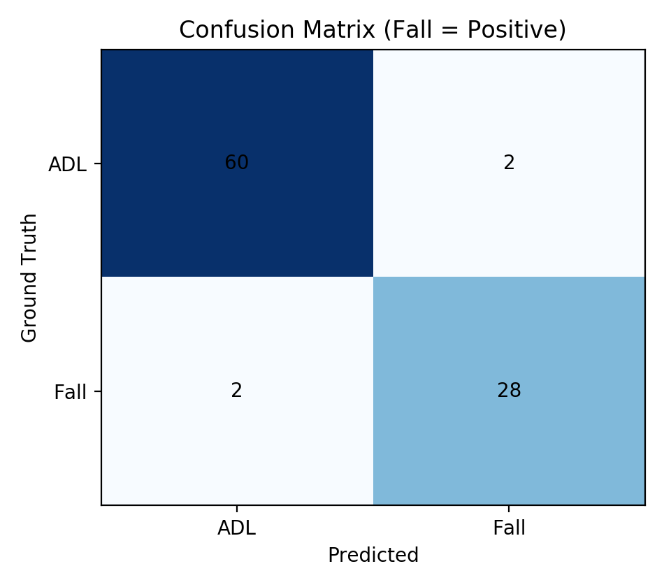
| 指標 | 數值 |
|---|---|
| Accuracy | 95.65% |
| Precision | 93.33% |
| Recall | 93.33% |
| F1-score | 93.33% |
INT8 量化後準確率維持 95.65%……
以 Fall 為正類，固定測試集（92 筆）上的 FNR 為 0.0667，代表多數跌倒事件能被正確捕捉。FPGA 上板準確率為 92.39%（85/92），與 PC ONNX 參考之間的落差主要來自定點量化與 DMA 傳輸鏈路的累積誤差，仍在可接受範圍內。
跳幀消融：準確率 vs. 速度
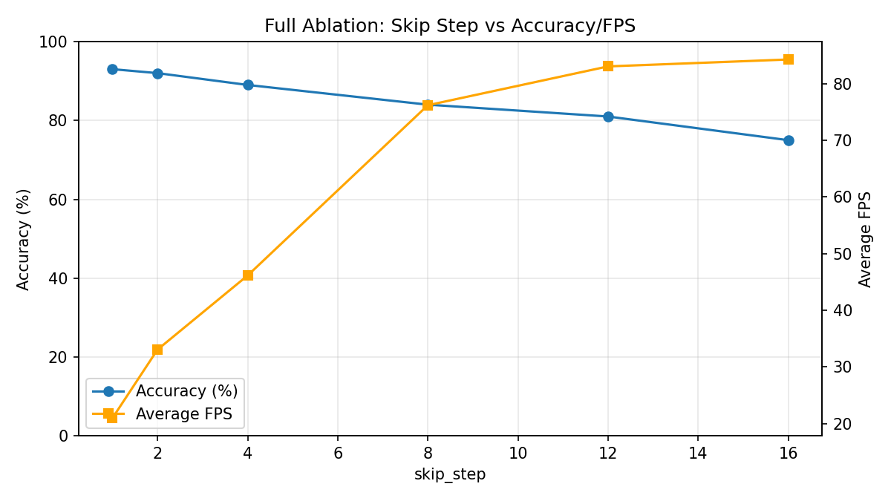
透過「跳幀」可以用準確率換取速度……
- Stride 1：93% / 20.97 FPS
- Stride 4：89% / 46.13 FPS
- Stride 8：84% / 76.18 FPS
- Stride 16：75% / 84.25 FPS
系統瓶頸分析
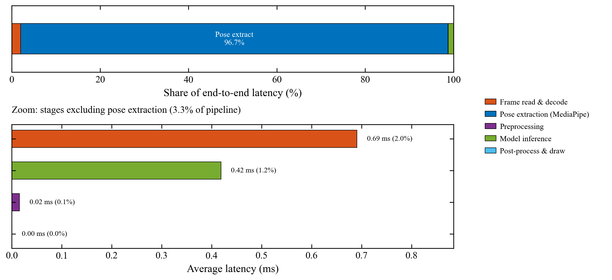
把端到端流程拆成五個階段後……
| 階段 | 平均耗時 | 占比 |
|---|---|---|
| read_decode | 0.69 ms | 2.02% |
| pose_extract | 33.06 ms | 96.71% |
| preprocess | 0.016 ms | 0.05% |
| inference | 0.42 ms | 1.22% |
| postprocess_draw | <0.001 ms | ~0% |
這個發現很重要……
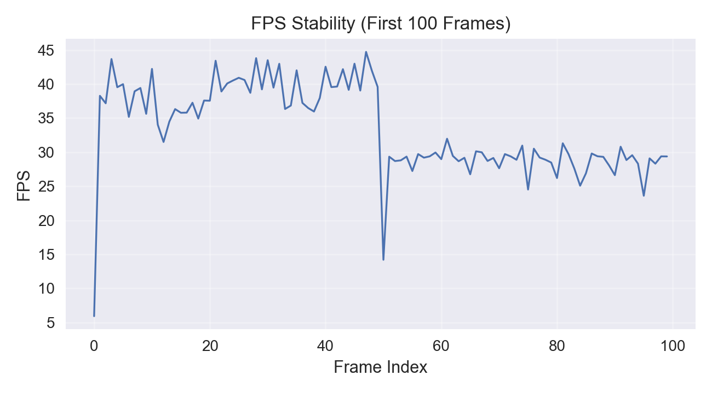
跨平台效能比較
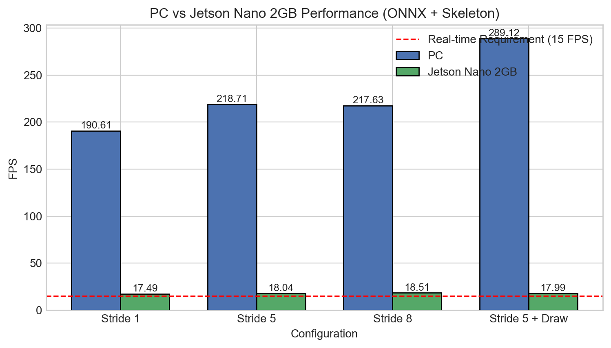
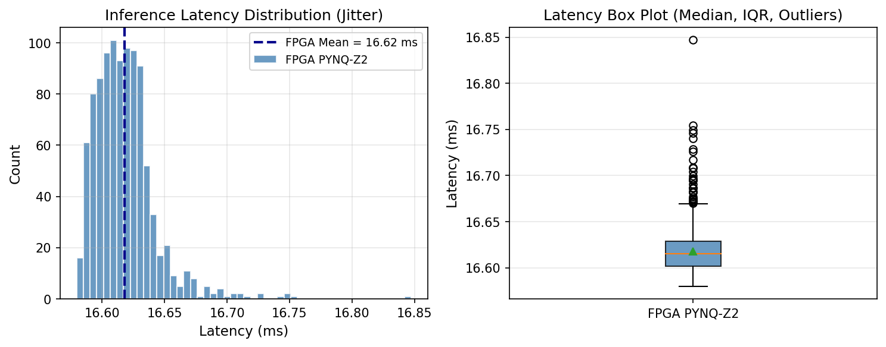
| 平台 | 模型推論延遲 | 推論 FPS | 特性 / 優勢 |
|---|---|---|---|
| PC (CPU) | ~0.42 ms | ~191 （端到端） | 高吞吐，但高功耗、延遲不確定 |
| Jetson Nano 2GB | ~0.42 ms | ~18 （端到端） | 易開發，受 OS 排程影響 |
| FPGA (PYNQ-Z2) | 0.41 ms（IP）/ 16.62 ms（含 DMA） | ~60.25 | 確定性延遲、低功耗、即時性 |
值得注意的是，FPGA 上 16.62 ms 的延遲中……
PC 在 Stride=1、No-Draw 設定下端到端 FPS 約 190.61，Jetson 約 18.11——差距主要來自骨架擷取與解碼在嵌入式 CPU 上的負擔，而非 1D-CNN 本身（兩者模型推論皆約 0.42 ms）。這也呼應了前述瓶頸分析：若要提升實際體感速度，應優先優化 MediaPipe 或改為預先離線抽骨架，而非一味加大模型加速器。
失效樣本分析
檢視模型判斷錯誤的案例……
在 92 筆測試樣本中，共標記 4 筆具代表性的錯誤案例（FN #54、#60；FP #26、#83），並以多幀骨架疊圖與 GIF 呈現。這些案例顯示模型對「快速蹲下」「轉身坐下」等與跌倒幾何上相似的动作仍可能混淆，未來可考慮加入更多負樣本或時序上下文特徵來改善。

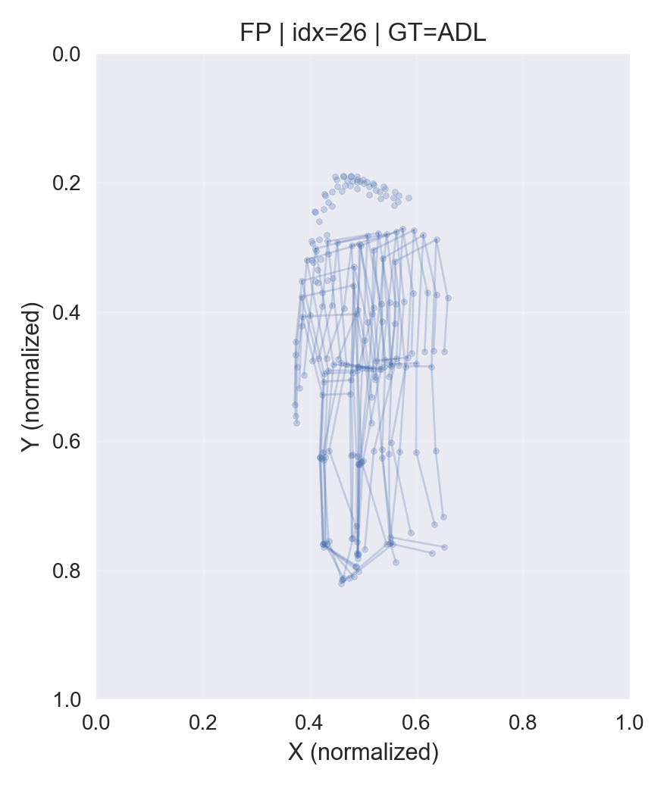
總結與收穫
這個專題完整走過了全流程……
- 輕量 1D-CNN 在固定測試集達 95.65% 準確率……
- 同一模型成功部署到 PC、Jetson、FPGA 三平台……
- FPGA 上板準確率 92.39%……
- 剖析證實瓶頸在骨架擷取……
- 從 DPU 轉向訂製加速器……
最大的收穫
學到的不只是「怎麼把模型變小」……
未來可延伸方向
- 優化 DMA 與資料搬移策略，縮短 FPGA 端 S2MM 佔比，逼近 IP 本身的 0.41 ms 計算下限
- 將 MediaPipe 替換為更輕量的姿態估計器，或改以專用感測器提供骨架，解決端到端 96% 前處理瓶頸
- 在更大 FPGA 或異質 SoC 上探索更多層的硬體 offload，並與 INT8 量化流程深度整合